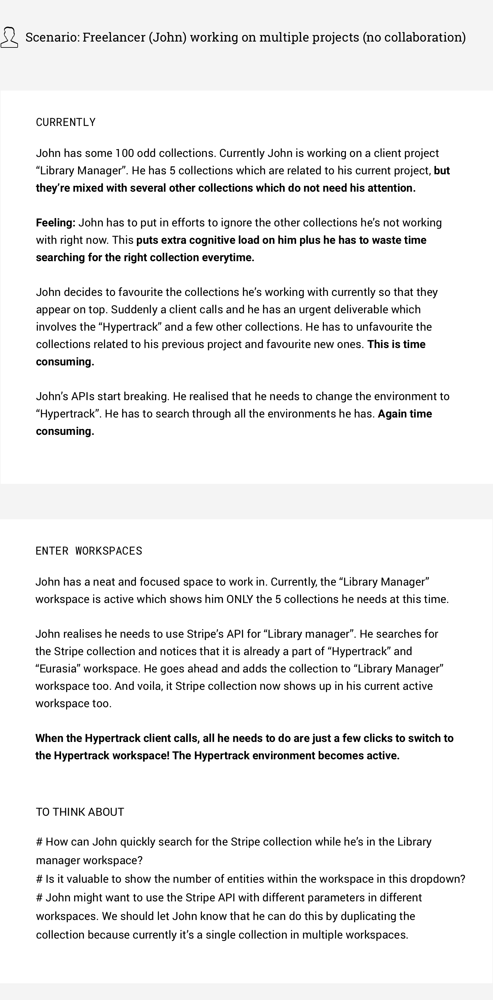
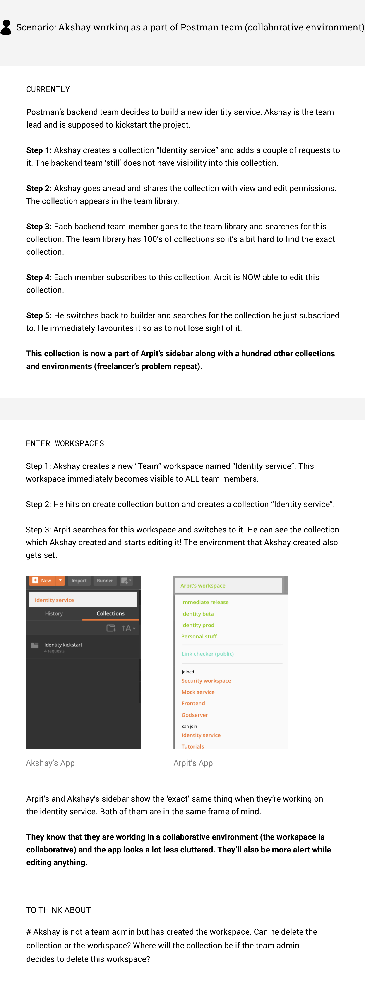

OVERVIEW
Thinking different
Workspaces is a key feature in Postman. When the work on this feature was started, everyone in the team had a very vague idea of what workspaces would be like, and required a lot of discussions and brainstorming. Workspaces was supposed to be a 'view' over all the Postman entities (collections, environments etc.). This meant that one entity in the Postman data store could reside in multiple workspaces. Workspaces were NOT meant to act like folders (containers).
I came up with the idea of visualising workspaces as actual views (something which we had learnt in physics class back in school). This illustration helped a lot of people in the team understand the abstraction better and made the next steps clearer.
SCENARIOS
Why do we need workspaces in Postman?
To get a deeper understanding of how workspaces would fit into the real world use cases of Postman, I picked two personas and wrote scenarios for them.
 WHAT'S NEXT
Next steps
I stopped working on the feature after a few initial designs were made. This feature is now in production. Read the full story here.